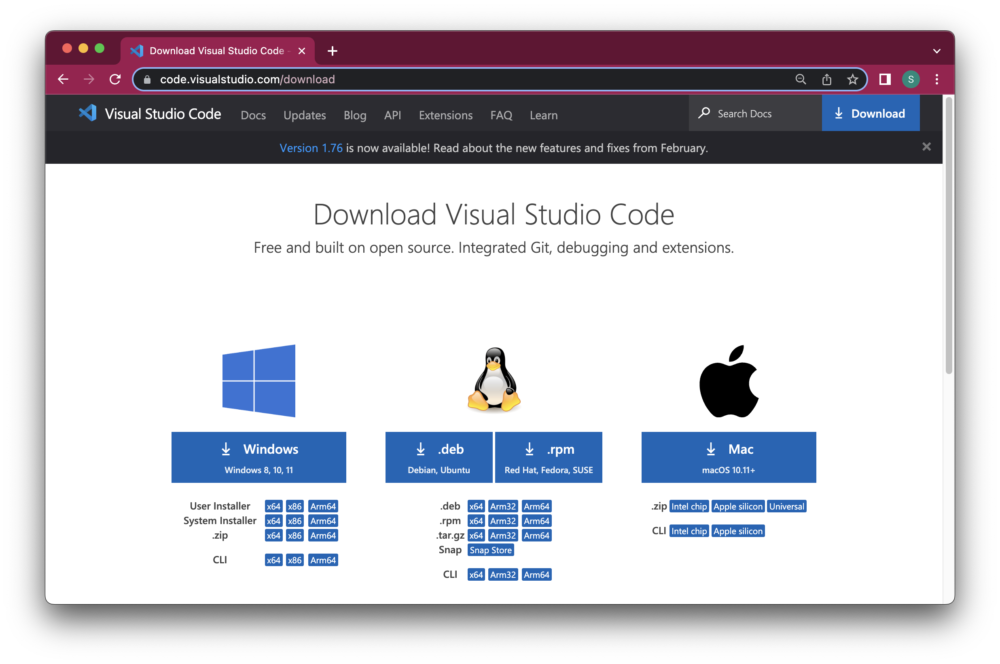
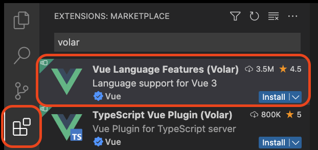
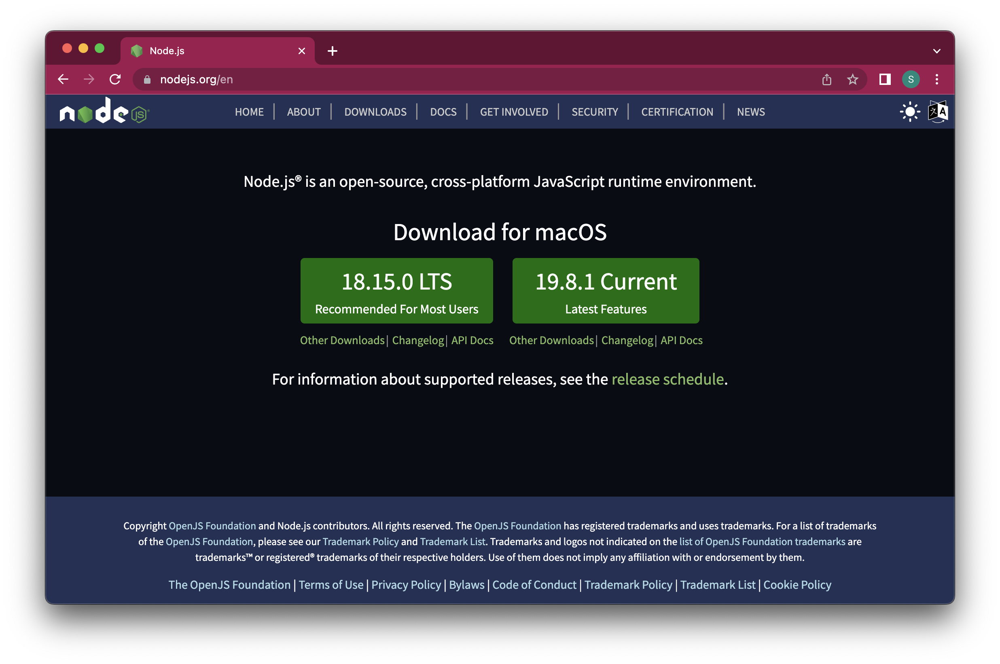
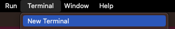
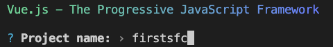
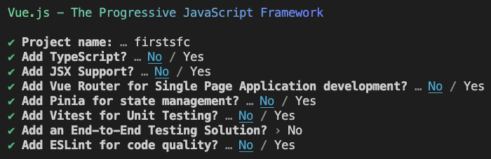
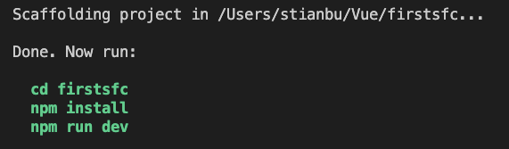
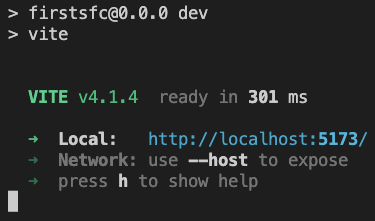
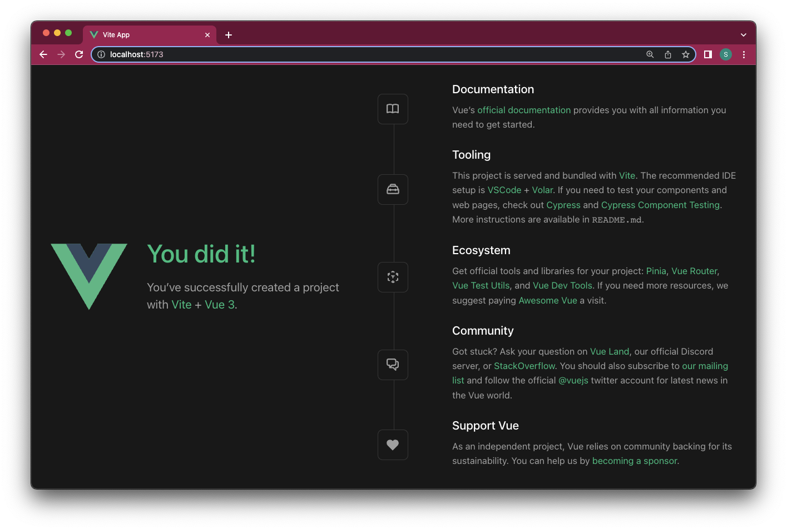
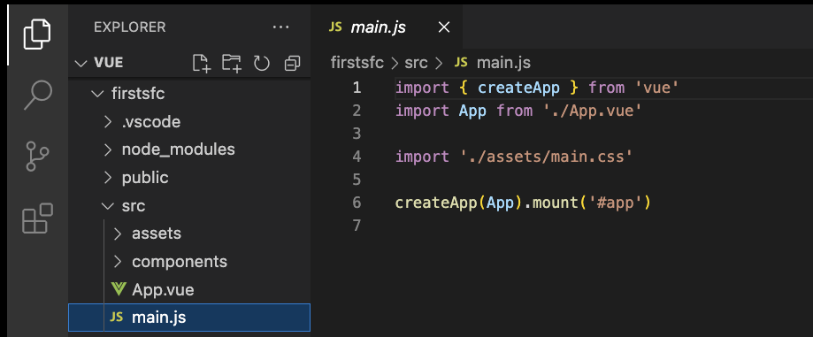

Scaling up Vue
எங்கள் Vue திட்டத்திற்கு *.vue கோப்புகளைப் பயன்படுத்துவது அர்த்தமுள்ளதாகும், ஏனெனில்:
- டெம்ப்ளேட்டுகள் மற்றும் கூறுகளின் பயன்பாட்டுடன் பெரிய திட்டங்களைக் கையாள எளிதாகிறது.
- பயனர்கள் பக்கத்தைப் பார்ப்பதைப் போல https நெறிமுறை மூலம் எங்கள் திட்டத்தைப் பார்க்கவும் சோதிக்கவும் முடியும்.
- மாற்றங்கள் சேமிக்கப்படும்போது பக்கம் உடனடியாக புதுப்பிக்கப்படுகிறது, மீள் ஏற்றம் இல்லாமல்.
- Vue இல் உண்மையான வலைப்பக்கங்கள் இவ்வாறு கட்டப்படுகின்றன.
- டெவலப்பர்கள் இப்படித்தான் வேலை செய்கிறார்கள்.
Why?
Vue இல் டெம்ப்ளேட்டுகள் மற்றும் கூறுகள் பற்றிய முந்தைய பக்கத்தில் நாம் பார்த்தபடி, இப்போது வேறுபட்ட வழியில் வேலை செய்ய வேண்டிய தேவை உள்ளது, ஏனெனில் நாங்கள் விரும்புகிறோம்:
- பெரிய திட்டங்களைக் கொண்டிருக்க
- அனைத்து Vue தொடர்பான குறியீட்டையும் ஒரே இடத்தில் சேகரிக்க
- Vue இல் கூறுகளைப் பயன்படுத்த (விரைவில் இதற்கு வருவோம்)
- எடிட்டரில் முன்னிலைப்படுத்தல் மற்றும் தானியங்கி நிறைவு ஆதரவைக் கொண்டிருக்க
- உலாவியை தானாக புதுப்பிக்க
இவை அனைத்தையும் சாத்தியமாக்க, நாம் *.vue கோப்புகளுக்கு மாற வேண்டும்.
How?
SFCகள் (ஒற்றை கோப்பு கூறுகள்), அல்லது *.vue கோப்புகள், வேலை செய்ய எளிதானவை, ஆனால் உலாவியில் நேரடியாக இயக்க முடியாது, எனவே எங்கள் கணினியை எங்கள் *.vue கோப்புகளை *.html, *.css மற்றும் *.js கோப்புகளாக தொகுக்க அமைக்க வேண்டும், இதனால் உலாவி எங்கள் Vue பயன்பாட்டை இயக்க முடியும்.
SFCகளை அடிப்படையாகக் கொண்ட எங்கள் வலைப்பக்கத்தை உருவாக்க, வைட் என்று அழைக்கப்படும் ஒரு நிரலை பில்டு கருவியாகப் பயன்படுத்துகிறோம், மற்றும் Vue 3 மொழி அம்சங்களுக்கான வோலர் நீட்டிப்புடன் VS Code எடிட்டரில் எங்கள் குறியீட்டை எழுதுகிறோம்.
Setup
உங்கள் கணினியில் Vue SFC பயன்பாடுகளை இயக்க உங்களுக்குத் தேவையானவற்றை நிறுவ கீழே உள்ள மூன்று படிகளைப் பின்பற்றவும்.
The "VS Code" Editor
Vue திட்டங்களுக்கு பல வெவ்வேறு எடிட்டர்கள் பயன்படுத்தப்படலாம். நாங்கள் VS Code எடிட்டரைப் பயன்படுத்துகிறோம். VS Code ஐ பதிவிறக்கம் செய்து நிறுவவும்.

The VS Code "Volar" Extension
எடிட்டரில் *.vue கோப்புகளுடன் முன்னிலைப்படுத்தல் மற்றும் தானியங்கி நிறைவைப் பெற, VS Code ஐத் திறக்கவும், இடது பக்கத்தில் "Extensions" க்குச் செல்லவும். "Volar" க்கு தேடவும் மற்றும் அதிக பதிவிறக்கங்களுடன் "Language support for Vue 3" என்ற விளக்கத்துடன் நீட்டிப்பை நிறுவவும்.

Node.js
Node.js இன் சமீபத்திய பதிப்பை பதிவிறக்கம் செய்து நிறுவவும், ஏனெனில் Vue பில்டு கருவி "Vite" இதன் மேல் இயங்குகிறது.
Node.js என்பது திறந்த மூல சேவையக-பக்க ஜாவாஸ்கிரிப்ட் ரன்டைம் சூழலாகும்.

Create The Default Example Project
உங்கள் கணினியில் இயல்புநிலை Vue எடுத்துக்காட்டுத் திட்டத்தை உருவாக்க கீழே உள்ள படிகளைப் பின்பற்றவும்.
- உங்கள் கணினியில் உங்கள் Vue திட்டங்களுக்கான ஒரு கோப்புறையை உருவாக்கவும்.
- VS Code இல், மெனுவில் இருந்து Terminal -> New Terminal ஐத் தேர்ந்தெடுப்பதன் மூலம் ஒரு டெர்மினலைத் திறக்கவும்:

- cd <folder-name>, cd .., ls (Mac/Linux) மற்றும் dir (Windows) போன்ற கட்டளைகளைப் பயன்படுத்தி நீங்கள் உருவாக்கிய Vue கோப்புறைக்குச் செல்ல டெர்மினலைப் பயன்படுத்தவும். டெர்மினலில் கட்டளைகளை எழுதுவதில் நீங்கள் பழக்கமில்லை என்றால், கட்டளை வரி இடைமுகம் (CLI) பற்றிய எங்கள் அறிமுகத்தை இங்கே பார்க்கவும்.
- டெர்மினலில் உங்கள் Vue கோப்புறைக்குச் சென்ற பிறகு, எழுதவும்:
npm init vue@latest
திட்ட பெயராக "firstsfc" உடன் உங்கள் முதல் திட்டத்தை உருவாக்கவும்:

அனைத்து விருப்பங்களுக்கும் "No" என்று பதிலளிக்கவும்:

இப்போது இது உங்கள் டெர்மினலில் வழங்கப்பட வேண்டும்:

இப்போது மேலே பரிந்துரைக்கப்பட்டுள்ள கட்டளைகளை இயக்குவோம்.
'firstsfc' கோப்புறைக்குள் உங்கள் புதிய திட்டத்திற்கு கோப்பகத்தை மாற்ற இந்த கட்டளையை இயக்கவும்:
cd firstsfcVue திட்டம் வேலை செய்ய தேவையான அனைத்து சார்புகளையும் நிறுவவும்:
npm installடெவலப்ப்மென்ட் சேவையகத்தைத் தொடங்கவும்:
npm run devடெர்மினல் சாளரம் இப்போது இதுபோல் தெரிய வேண்டும்:

மேலும் உங்கள் உலாவி எடுத்துக்காட்டுத் திட்டத்தை தானாகவே திறக்க வேண்டும்:

உலாவியில் எடுத்துக்காட்டுத் திட்டத்தைக் கண்டுபிடிக்க முடியாவிட்டால், டெர்மினலிலிருந்து இணைப்பைப் பயன்படுத்தவும். உங்கள் டெர்மினல் சாளரத்தில் காணப்படும் இணைப்பு மேலே உள்ள ஸ்கிரீன்ஷாட்டில் உள்ள முகவரியை விட வேறுபட்ட முகவரியைக் கொண்டிருக்கலாம்.
இப்போது எடுத்துக்காட்டுத் திட்டம் வைட் பில்டு கருவியால் உங்கள் இயந்திரத்தில் டெவலப்ப்மென்ட் பயன்முறையில் இயங்குகிறது.
The Project Files
தானாகவே உருவாக்கப்பட்ட எடுத்துக்காட்டுத் திட்டம் பல கோப்புகளைக் கொண்டுள்ளது, மேலும் அவற்றில் சிலவற்றை விரைவாகப் பார்ப்போம்.
main.js
VS Code எடிட்டரில் உங்கள் Vue திட்டத்திற்குச் சென்று, "src" கோப்புறையில் "main.js" கோப்பைக் கண்டறியவும்:

"main.js" "App.vue" கோப்பை அடிப்படையாகக் கொண்டு Vue திட்டத்தை எவ்வாறு உருவாக்குவது என்பதை வைட்டிற்குச் சொல்லும். இது எங்கள் Vue குறியீட்டை எவ்வாறு இயக்குவது என்பதை உலாவிக்குச் சொல்ல ஸ்கிரிப்ட் குறிச்சொல்லுடன் ஒரு CDN இணைப்பை நாங்கள் முன்பு எவ்வாறு வழங்கினோம் என்பதைப் போன்றது, மேலும் Vue உதாரணத்தை <div id="app"> குறிச்சொல்லில் எவ்வாறு ஏற்றினோம் என்பதைப் போன்றது.
App.vue
அதே எடுத்துக்காட்டுத் திட்ட கோப்புறையில், "App.vue" கோப்பைக் கண்டறிந்து திறக்கவும். மற்ற அனைத்து *.vue கோப்புகளைப் போலவே, "App.vue" மூன்று பகுதிகளைக் கொண்டுள்ளது: ஒரு <script> பகுதி, ஒரு <template> பகுதி மற்றும் ஒரு <style> பகுதி.
<script setup>
import HelloWorld from './components/HelloWorld.vue'
import TheWelcome from './components/TheWelcome.vue'
</script>
<template>
<header>
<img alt="Vue logo" class="logo" src="./assets/logo.svg" width="125" height="125" />
<div class="wrapper">
<HelloWorld msg="You did it!" />
</div>
</header>
<main>
<TheWelcome />
</main>
</template>
<style scoped>
header {
line-height: 1.5;
}
.logo {
display: block;
margin: 0 auto 2rem;
}
@media (min-width: 1024px) {
header {
display: flex;
place-items: center;
padding-right: calc(var(--section-gap) / 2);
}
.logo {
margin: 0 2rem 0 0;
}
header .wrapper {
display: flex;
place-items: flex-start;
flex-wrap: wrap;
}
}
</style>"App.vue" இன் ஸ்கிரிப்ட் பகுதியில் நீங்கள் பார்க்க முடியும், மற்ற *.vue கோப்புகள் குறிப்பிடப்படுகின்றன: அவை 'கூறுகள்' மற்றும் 'components' கோப்புறையில் அமைந்துள்ளன. 'App.vue' கோப்பின் 'template' பகுதியில் நீங்கள் பார்த்தால், சாதாரண HTML குறிச்சொற்கள் அல்லாத குறிச்சொற்களைக் காணலாம்: <HelloWorld> மற்றும் <TheWelcome>. இவ்வாறுதான் கூறுகள் குறிப்பிடப்படுகின்றன. கூறுகள் ஆப் உள்ளே உள்ள ஆப் போன்றவை. விரைவில் கூறுகள் பற்றி மேலும் அறிவோம்.
Vue Exercises
கோப்பின் பெயர் என்ன?
______ என்பது தொகுப்பியை Vue திட்டம் எந்த கோப்புகளைக் கொண்டுள்ளது என்பதைச் சொல்ல பொறுப்பாகும்.